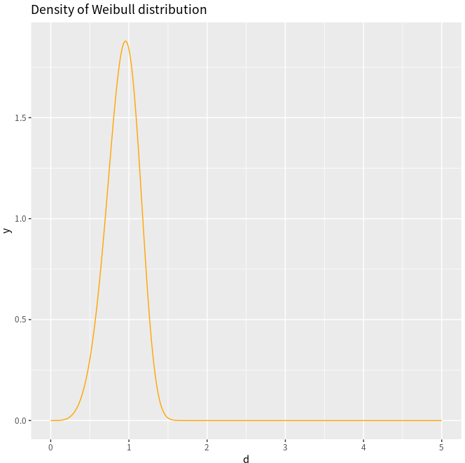
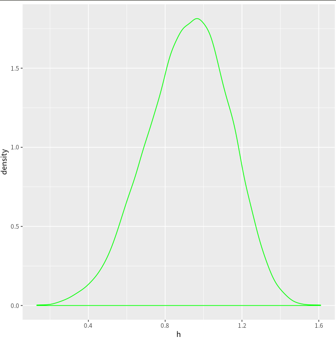

Plot¶
Base¶
layout¶
For two subplots, the height of the first subplot is 8 times than the height of the second subplot,
layout(mat = matrix(c(rep(1, 8), 2), ncol = 1, byrow = TRUE))
see more details in https://stats.hohoweiya.xyz/2022/11/21/KEGGgraph/
math formula¶
No need to use paste function ( )
)
| COMMAND | FIGURE |
|---|---|
~ in the expression represents a space: expression(xLab ~ x^2 ~ m^-2) |
 |
* in the expression implies no space: expression(xLab ~ x^2 * m^-2) |
 |
expression(R[group("", list(hat(F),F),"")]^2) OR expression(R[hat(F) * ',' ~ F]^2) |
 |
pure figure without axis¶
Suppose I want to draw the following figure with R,

At first, I try to use xaxt option to remove the axis, but the box still remains, just same as the one question in the StackOverflow, and I found a possible solution, directly use
plot.new()
All is well before I tried to add the text \rho, if I use
text(0.8, 0, expression(rho), cex = 2)
it is OK, but it is exactly on the axis, not proper, but when I tried smaller y-coordinate, such as -0.1, the text cannot appear, which seems out of the figure. I have tried par() parameters, such as mar, but does not work.
Then I have no idea, and do not know how to google it. And even though I want to post an issue in the StackOverflow. But a random reference give me ideas, in which the example saves me,
> plot.new()
> plot.window(xlim=c(0,1), ylim=c(5,10))
> abline(a=6, b=3)
> axis(1)
> axis(2)
> title(main="The Overall Title")
> title(xlab="An x-axis label")
> title(ylab="A y-axis label")
> box()
Then I realized that I should add
plot.window(xlim = c(0, 1), ylim = c(-0.1, 0.9))
smooth curve¶
x <- 1:10
y <- c(2,4,6,8,7,12,14,16,18,20)
lo <- loess(y~x)
plot(x,y)
lines(predict(lo), col='red', lwd=2)
参考How to fit a smooth curve to my data in R?
margin¶
有时通过 par(mfrow=c(2,1)) 画图时间距过大，这可以通过 mar 来调节，注意到
mar调节单张图的 marginoma调节整张图外部的 margin
参考 how to reduce space gap between multiple graphs in R
比如，B spline in R, C++ and Python
custom panels in pairs¶
问题来自R语言绘图？ - 知乎

my.lower <- function(x,y,...){
points(x, y)
lines(lowess(x, y), col = "red", lwd=2)
}
my.upper <- function(x, y, ...){
cor.val = round(cor(x,y), digits = 3)
if (abs(cor.val) > 0.5){
text(mean(x), mean(y), cor.val, cex = 3)
text(sort(x)[length(x)*0.8], max(y), '***', cex = 4, col = "red")
} else
{
text(mean(x), mean(y), cor.val, cex = 1)
}
}
pairs(iris[1:4], lower.panel =my.lower, upper.panel = my.upper)
参考 Different data in upper and lower panel of scatterplot matrix
remove outliers from the boxplot¶
How to remove outliers from a dataset
在grid排列图¶
combine base and ggplot graphics in R figure¶
refer to Combine base and ggplot graphics in R figure window
lattice¶
The package can easily generate trellis graphs. A trellis graph displays the distribution of a variable or the relationship between variables, separately for each level of one or more other variables.
A thorough tutorial refers to Reproduce Figures with Lattice – ESL CN
ggplot¶
histogram¶
fill (not color) & factor (not numeric) in histogram
df = data.frame(a = c(rnorm(100), rnorm(100) +1), g = rep(1:2, each=100))
ggplot(df, aes(a, colour = g)) + geom_histogram()

ggplot(df, aes(a, col = factor(g) )) + geom_histogram()

ggplot(df, aes(a, fill = factor(g) )) + geom_histogram()

alpha not work in single histogram
ggplot(df, aes(a, fill= factor(g)), alpha=0.2) + geom_histogram()

ggplot(df, aes(a)) + geom_histogram(data = subset(df, g == 1), aes(fill = factor(g)), alpha = 0.5) +
geom_histogram(data = subset(df, g == 2), aes(fill = factor(g)), alpha = 0.5)
 Note that
Note that aes(fill = ) is important, otherwise no legend. See also: , ,
multiple density plots¶
plots <- NULL
for (i in 1:4) {
x = i + rnorm(100)
plots[[i]] <- ggplot(data.frame(x), aes(x)) +
geom_density(alpha = 0.5, show.legend = FALSE)
}
cowplot::plot_grid(plotlist = plots)
Application
See one of my homework written in Rmarkdown, 中心极限定理模拟实验
density of Weibull¶
adapted from ggplot2绘制概率密度图
Take the Weibull distribution as an example,
where \lambda > 0 is the scale parameter, and k > 0 is the shape parameter. And
- if k=1, it becomes to the exponential distribution
- if k=2, it becomes to the Rayleigh distribution.
d <- seq(0, 5, length.out=10000)
y <- dweibull(d, shape=5, scale=1, log = FALSE)
df <- data.frame(x=d,y)
ggplot(df, aes(x=d, y=y)) +
geom_line(col = "orange") +
ggtitle("Density of Weibull distribution")

h = rweibull(10000, shape=5, scale=1)
ggplot(NULL, aes(x=h)) +
geom_histogram(binwidth=0.01, fill="white", col="red") +
ggtitle("Histogram of Weibull distribution")

ggplot(NULL, aes(x=h)) + geom_density(col = "green")

ggplot(NULL, aes(x=h)) + geom_line(stat = "density", col = "red")
A minor difference is that here is a horizontal line in the above estimated density.

Also refer to Plotting distributions (ggplot2)
legend setup¶
默认情形¶
library(ggplot2)
bp <- ggplot(data=PlantGrowth, aes(x=group, y=weight, fill=group)) + geom_boxplot()
bp
自定义图例的顺序¶
首先移除掉默认图例，有三种方式实现：
# Remove legend for a particular aesthetic (fill)
bp + guides(fill=FALSE)
# It can also be done when specifying the scale
bp + scale_fill_discrete(guide=FALSE)
# This removes all legends
bp + theme(legend.position="none")
再改变默认顺序
bp + scale_fill_discrete(breaks=c("trt1","ctrl","trt2"))
颠倒图例的顺序¶
# These two methods are equivalent:
bp + guides(fill = guide_legend(reverse=TRUE))
bp + scale_fill_discrete(guide = guide_legend(reverse=TRUE))
# You can also modify the scale directly:
bp + scale_fill_discrete(breaks = rev(levels(PlantGrowth$group)))
隐藏图例标题¶
# Remove title for fill legend
bp + guides(fill=guide_legend(title=NULL))
# Remove title for all legends
bp + theme(legend.title=element_blank())
自定义图例的标题及名称¶
两种方式，一种 另一种修改数据集
图例的整体形状¶
# Title appearance
bp + theme(legend.title = element_text(colour="blue", size=16, face="bold"))
# Label appearance
bp + theme(legend.text = element_text(colour="blue", size = 16, face = "bold"))
图例盒子
bp + theme(legend.background = element_rect())
bp + theme(legend.background = element_rect(fill="gray90", size=.5, linetype="dotted"))
图例位置
bp + theme(legend.position="top")
# Position legend in graph, where x,y is 0,0 (bottom left) to 1,1 (top right)
bp + theme(legend.position=c(.5, .5))
# Set the "anchoring point" of the legend (bottom-left is 0,0; top-right is 1,1)
# Put bottom-left corner of legend box in bottom-left corner of graph
bp + theme(legend.justification=c(0,0), legend.position=c(0,0))
# Put bottom-right corner of legend box in bottom-right corner of graph
bp + theme(legend.justification=c(1,0), legend.position=c(1,0))
隐藏图例的slashes¶
# No outline
ggplot(data=PlantGrowth, aes(x=group, fill=group)) +
geom_bar()
# Add outline, but slashes appear in legend
ggplot(data=PlantGrowth, aes(x=group, fill=group)) +
geom_bar(colour="black")
# A hack to hide the slashes: first graph the bars with no outline and add the legend,
# then graph the bars again with outline, but with a blank legend.
ggplot(data=PlantGrowth, aes(x=group, fill=group)) +
geom_bar() +
geom_bar(colour="black", show.legend=FALSE)
坐标轴标签字体大小¶
参考Size of labels for x-axis and y-axis ggplot in R
多张图片¶
par(mfrow=c(1,2))不起作用，要用到 gridExtra 包，如
library(gridExtra)
plot1 <- qplot(1)
plot2 <- qplot(1)
grid.arrange(plot1, plot2, ncol=2)
参考Side-by-side plots with ggplot2
绘制地图¶
参考
scale_fill_manual 和 scale_color_manual¶
更改颜色命令为
scale_fill_manual(values = c("red", "blue"))
save¶
NOT png()...dev.off(), use
ggsave("sth.eps",device="eps", width=9)
aes_string vs aes¶
在重复绘图时，似乎是作用域的缘故，有时 aes 只能保留最后一个，此时需要用 aes_string.
参考 Question: Continuously add lines to ggplot with for loop
Created: April 24, 2018